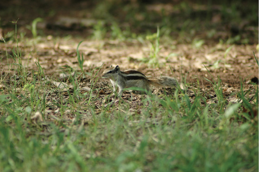

PAKİSTAN, 31 Temmuz
Pakistan’la ilgili fotoğraflar yükledim biraz önce sitemize. Bu deftere Pakistan’la ilgili güzel şeyleri yeteri kadar yansıtamadığımın farkındayım. “Esip gürlediğime bakma” diyorum İnci’ye, “Hep güzel şeyler koydum siteye”. Burada “Mouse” demelerine rağmen, bizce aslında yüzde yüz sincap olan ve ortalıkta yüzlercesini gördüğümüz güzel hayvanlar, Pakistan’la ilgili güzel şeylerden sadece birisi.
Pakistan yollarının sıcağı, kirliliği, lastik patlakları dışında bir şeyler yazmakta sıkıntı yaşıyorum, doğru. Ama bugün gördüğüm bir kuş, şimdi onca yorgunluğun üzerine bu notları yazan bana bir “Oh!” dedirtiyor. Geniş kanatlarıyla birkaç saat boyunca çevremizde uçuşan kuşları unutmam mümkün değil ama yine de ben taze taze not almalıyım. Bir ara bu bahsettiğim kuşa bakarken neredeyse düşüyordum. Belki de ara ara gördüğüm bu kuş, aynı kuş dahi olmayabilir. Emin değiliz. Bir türlü çok yakınımıza gelmeyen bu kuşun ilk göze çarpan özelliği kanatlarının çok büyük olması. Yol boyu bazen yaklaşıp uzaklaşarak, ama sanki hep yolun çevresindeymiş gibi hareket etmesinin sebebi ne olabilir diye düşünüyoruz? Yol boyu gördüğümüz ezilmiş hayvanlar geliyor aklımıza. Yolda bolca leş var. Bu kuş bir akbaba olabilir mi acaba? Zoom objektifi takıyorum fotoğraf makinesine, ama bu sefer de sanki bunu öğrenmiş ve menzilini artırmışçasına sadece uzaklarda uçarken görebiliyorum ancak.
Bazen bisikletime kartal derim ben de. Yorulduğum anlarda ve özellikle yokuş inerken hızlandığımda. Hatta önümde ya da arkamda İnci’yle birlikte hızla inerken, bisikleti de kendimizden ayrı tutmadığımızdan dolayı bir çift kartal oluruz ikimiz de zihnimde. Hem de nasıl bir kartal? Altın şehir Eldorado’yu arayan 80’lerin çizgi film kahramanı Esteban’ın altın kartalı.
Kartal hıza neden ihtiyaç duyar. Çünkü avı hiç de zayıf değildir. Hızlı olmazsa aç kalır. Biz de her gün yollara, yokuşlara ve aslında genel manada hayata saldırıyoruz. Yavaş kalırsak, harekete geçmezsek elimizden kaçırmamız an meselesi. Hayattan ne istiyoruz peki? Bir tılsım bir büyü bir anlam arıyoruz. Yoksa ne diye bu satırları, Pakistan’ın adını telaffuz bile edemediğim kasabasında yazıp duruyorum ki?

Pakistan, İslamabat
Bu sevimli şeye “fare” demek günahtır yahu.
Bazı kişilerse, şu an oturdukları yerde muhtemelen televizyon izlerken, değişmeyen bayağı muhabbetlerine devam ederken, gerçekte hayatın akıp gittiğinin farkındalar, ama harekete geçemedikleri için uçamayan ve çaresizce bekleyen bir akbaba gibi, önlerine düşecek bir heyecan kırıntısından, sözde sanatçıların yaşamlarından, magazin gündeminden bir parça eğlence bekliyorlar. Leş eğlencesi.
Biz yarın yine yollara saldıracağız, hayata sarılacağız...